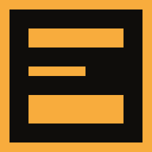
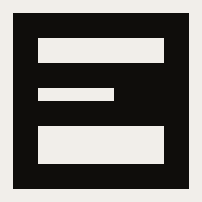
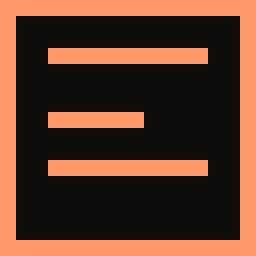

#0f0d0b ground fills 14 of the 16 pixels, so the bands are always amber-on-near-black regardless of what is behind them. Contrast is a property of the artwork, not of the taskbar. The alternative — a single mid-tone with enough chroma to survive both ends — was drawn as direction C and rejected: amber holds 10.1:1 on a dark taskbar but 1.7:1 on a light one, which fails the 3:1 minimum for non-text contrast, and it rules out near-white as a state colour.#1f1f1f, the actual default Windows taskbar, because pure black flatters a dark-ground icon in a way the real thing does not.#ff9868 and #f8ac3d are 40° apart in hue at nearly the same lightness — side by side they separate, but idle-versus-deferred is the most consequential distinction the icon makes and it has to survive being seen alone. So the bands collapse from 2/1/3 px to three 1px rules: solid block versus sparse block, obvious at a glance and still obvious in greyscale. The semantics come out right as well — the layers are outlined where they would be, but nothing is being deposited.--neg means shrinkage in every chart in the app; spending it on deferral would break that. Red was never a candidate — deferring is the software working correctly..ico in that order; no resampling required at any step.